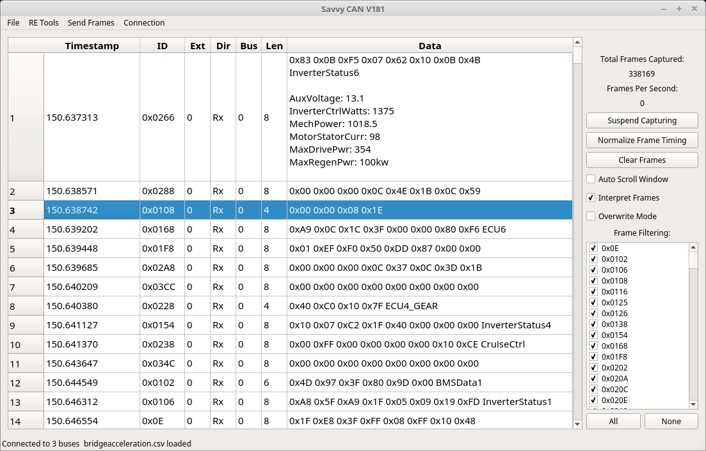
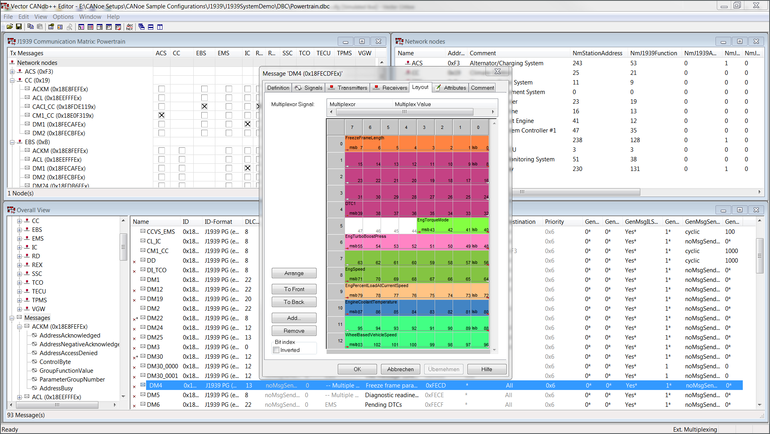

Intro into CAN BUS
Why CAN bus revolutionised the automotive industry
About the blog
This will be a small blog regarding what CAN bus is and how it can be used on a Linux System running ROS .
Tools Involved
- SocketCan
- SavvyCan
- PeakCAN
- Vector CAN tools , CAN DB++
Procedure
“SavvyCAN is a cross platform QT based C++ program. It is a CAN bus reverse engineering and capture tool. It was originally written to utilize EVTV hardware such as the EVTVDue and CANDue hardware. It has since expanded to be able to use any socketCAN compatible device as well as the Macchina M2 and Teensy 3.x boards. It can capture and send to multiple buses and CAN capture devices at once.” More: https://www.savvycan.com/

SavvyCan displaying the interpreted values of the CAN frames according to the DBC

This tool is what i would recommend people to use when editing the DBC files for editing the layout